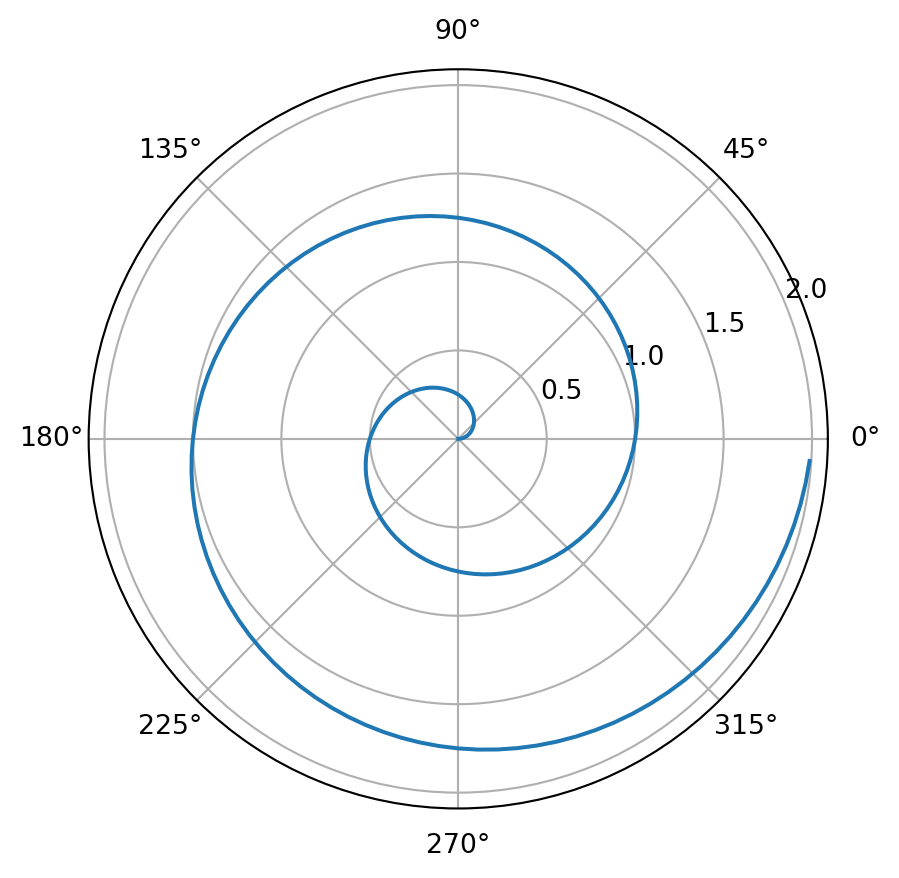

![]()
import numpy as np
import matplotlib.pyplot as plt
r = np.arange(0, 2, 0.01)
theta = 2 * np.pi * r
fig, ax = plt.subplots(
subplot_kw = {'projection': 'polar'}
)
ax.plot(theta, r)
ax.set_rticks([0.5, 1, 1.5, 2])
ax.grid(True)
plt.show()

Eine Reise durch die Möglichkeiten von Quarto
Dies ist ein Typoblindtext. An ihm kann man sehen, ob alle Buchstaben da sind und wie sie aussehen. Manchmal benutzt man Worte wie Hamburgefonts, Rafgenduks oder Handgloves, um Schriften zu testen. Manchmal Sätze, die alle Buchstaben des Alphabets enthalten - man nennt diese Sätze »Pangrams«. Sehr bekannt ist dieser: The quick brown fox jumps over the lazy old dog. Oft werden in Typoblindtexte auch fremdsprachige Satzteile eingebaut (AVAIL® and Wefox™ are testing aussi la Kerning), um die Wirkung in anderen Sprachen zu testen. In Lateinisch sieht zum Beispiel fast jede Schrift gut aus. Quod erat demonstrandum. Seit 1975 fehlen in den meisten Testtexten die Zahlen, weswegen nach TypoGb. 204 § ab dem Jahr 2034 Zahlen in 86 der Texte zur Pflicht werden. Nichteinhaltung wird mit bis zu 245 € oder 368 $ bestraft. Genauso wichtig in sind mittlerweile auch Âçcèñtë, die in neueren Schriften aber fast immer enthalten sind. Ein wichtiges aber schwierig zu integrierendes Feld sind OpenType-Funktionalitäten. Je nach Software und Voreinstellungen können eingebaute Kapitälchen, Kerning oder Ligaturen (sehr pfiffig) nicht richtig dargestellt werden. Dies ist ein Typoblindtext.(Karsdorp, Kestemont und Riddell 2021) An ihm kann man sehen, ob alle Buchstaben da sind und wie sie aussehen. Manchmal benutzt man Worte wie Hamburgefonts, Rafgenduks oder Handgloves, um Schriften zu testen. Manchmal Sätze, die alle Buchstaben des Alphabets enthalten - man nennt diese Sätze »Pangrams«. Sehr bekannt ist dieser: The quick brown fox jumps over the lazy old dog. Oft werden in Typoblindtexte auch fremdsprachige Satzteile eingebaut (AVAIL® and Wefox™ are testing aussi la Kerning), um die Wirkung in anderen Sprachen zu testen. In Lateinisch sieht zum Beispiel fast jede Schrift gut aus. Quod erat demonstrandum. Seit 1975 fehlen in den meisten Testtexten die Zahlen, weswegen nach TypoGb. 204 § ab dem Jahr 2034 Zahlen in 86 der Texte zur Pflicht werden. Nichteinhaltung wird mit bis zu 245 € oder 368 $ bestraft. Genauso wichtig in sind mittlerweile auch Âçcèñtë, die in neueren Schriften aber fast immer enthalten sind. Ein wichtiges aber schwierig zu integrierendes Feld sind OpenType-Funktionalitäten. Je nach Software und Voreinstellungen können eingebaute Kapitälchen, Kerning oder Ligaturen (sehr pfiffig) nicht richtig dargestellt werden.
Dies ist ein Typoblindtext. An ihm kann man sehen, ob alle Buchstaben da sind und wie sie aussehen. Manchmal benutzt man Worte wie Hamburgefonts, Rafgenduks oder Handgloves, um Schriften zu testen. Manchmal Sätze, die alle Buchstaben des Alphabets enthalten - man nennt diese Sätze »Pangrams«. Sehr bekannt ist dieser: The quick brown fox jumps over the lazy old dog. Oft werden in Typoblindtexte auch fremdsprachige Satzteile eingebaut (AVAIL® and Wefox™ are testing aussi la Kerning), um die Wirkung in anderen Sprachen zu testen. In Lateinisch sieht zum Beispiel fast jede Schrift gut aus. Quod erat demonstrandum. Seit 1975 fehlen in den meisten Testtexten die Zahlen, weswegen nach TypoGb. 204 § ab dem Jahr 2034 Zahlen in 86 der Texte zur Pflicht werden. Nichteinhaltung wird mit bis zu 245 € oder 368 $ bestraft. Genauso wichtig in sind mittlerweile auch Âçcèñtë, die in neueren Schriften aber fast immer enthalten sind. Ein wichtiges aber schwierig zu integrierendes Feld sind OpenType-Funktionalitäten.(Altenhöner u. a. 2020) Je nach Software und Voreinstellungen können eingebaute Kapitälchen, Kerning oder Ligaturen (sehr pfiffig) nicht richtig dargestellt werden.
Dies ist ein Typoblindtext. An ihm kann man sehen, ob alle Buchstaben da sind und wie sie aussehen. Manchmal benutzt man Worte wie Hamburgefonts, Rafgenduks oder Handgloves, um Schriften zu testen. Manchmal Sätze, die alle Buchstaben des Alphabets enthalten - man nennt diese Sätze »Pangrams«. Sehr bekannt ist dieser: The quick brown fox jumps over the lazy old dog. Oft werden in Typoblindtexte auch fremdsprachige Satzteile eingebaut (AVAIL® and Wefox™ are testing aussi la Kerning), um die Wirkung in anderen Sprachen zu testen. In Lateinisch sieht zum Beispiel fast jede Schrift gut aus. Quod erat demonstrandum. Seit 1975 fehlen in den meisten Testtexten die Zahlen, weswegen nach TypoGb. 204 § ab dem Jahr 2034 Zahlen in 86 der Texte zur Pflicht werden. Nichteinhaltung wird mit bis zu 245 € oder 368 $ bestraft. Genauso wichtig in sind mittlerweile auch Âçcèñtë, die in neueren Schriften aber fast immer enthalten sind. Ein wichtiges aber schwierig zu integrierendes Feld sind OpenType-Funktionalitäten. Je nach Software und Voreinstellungen können eingebaute Kapitälchen, Kerning oder Ligaturen (sehr pfiffig) nicht richtig dargestellt werden.
Siehe Tabelle 1 und für weitere Details insbesondere Tabelle 1 (b).
Dies ist ein Typoblindtext. An ihm kann man sehen, ob alle Buchstaben da sind und wie sie aussehen. Manchmal benutzt man Worte wie Hamburgefonts, Rafgenduks oder Handgloves, um Schriften zu testen. Manchmal Sätze, die alle Buchstaben des Alphabets enthalten - man nennt diese Sätze »Pangrams«. Sehr bekannt ist dieser: The quick brown fox jumps over the lazy old dog. Oft werden in Typoblindtexte(Zweig 2019) auch fremdsprachige Satzteile eingebaut (AVAIL® and Wefox™ are testing aussi la Kerning), um die Wirkung in anderen Sprachen zu testen. In Lateinisch sieht zum Beispiel fast jede Schrift gut aus. Quod erat demonstrandum. Seit 1975 fehlen in den meisten Testtexten die Zahlen, weswegen nach TypoGb. 204 § ab dem Jahr 2034 Zahlen in 86 der Texte zur Pflicht werden. Nichteinhaltung wird mit bis zu 245 € oder 368 $ bestraft. Genauso wichtig in sind mittlerweile auch Âçcèñtë, die in neueren Schriften aber fast immer enthalten sind. Ein wichtiges aber schwierig zu integrierendes Feld sind OpenType-Funktionalitäten. Je nach Software und Voreinstellungen können eingebaute Kapitälchen, Kerning oder Ligaturen (sehr pfiffig) nicht richtig dargestellt werden.
| Col1 | Col2 | Col3 |
|---|---|---|
| A | B | C |
| E | F | G |
| A | G | G |
| Col1 | Col2 | Col3 |
|---|---|---|
| A | B | C |
| E | F | G |
| A | G | G |
Dies ist ein Typoblindtext. An ihm kann man sehen, ob alle Buchstaben da sind und wie sie aussehen. Manchmal benutzt man Worte wie Hamburgefonts, Rafgenduks oder Handgloves, um Schriften zu testen. Manchmal Sätze, die alle Buchstaben des Alphabets enthalten - man nennt diese Sätze »Pangrams«.(Manovich 2020) Sehr bekannt ist dieser: The quick brown fox jumps over the lazy old dog. Oft werden in Typoblindtexte auch fremdsprachige Satzteile eingebaut (AVAIL® and Wefox™ are testing aussi la Kerning), um die Wirkung in anderen Sprachen zu testen. In Lateinisch sieht zum Beispiel fast jede Schrift gut aus. Quod erat demonstrandum. Seit 1975 fehlen in den meisten Testtexten die Zahlen, weswegen nach TypoGb. 204 § ab dem Jahr 2034 Zahlen in 86 der Texte zur Pflicht werden. Nichteinhaltung wird mit bis zu 245 € oder 368 $ bestraft. Genauso wichtig in sind mittlerweile auch Âçcèñtë, die in neueren Schriften aber fast immer enthalten sind. Ein wichtiges aber schwierig zu integrierendes Feld sind OpenType-Funktionalitäten. Je nach Software und Voreinstellungen können eingebaute Kapitälchen, Kerning oder Ligaturen (sehr pfiffig) nicht richtig dargestellt werden.
Wir können auch Python-Code mit Quarto darstellen (s. Abbildung 1)!
def fib(n):
if n < 1:
raise Exception('undefined')
elif n < 3:
return 1
else:
return fib(n-1) + fib(n-2)Wir können aber auch Python-Code ausführen lassen und z.B. eine Visualisierung mit matplotlib erzeugen, s. Abbildung 2.
import numpy as np
import matplotlib.pyplot as plt
r = np.arange(0, 2, 0.01)
theta = 2 * np.pi * r
fig, ax = plt.subplots(
subplot_kw = {'projection': 'polar'}
)
ax.plot(theta, r)
ax.set_rticks([0.5, 1, 1.5, 2])
ax.grid(True)
plt.show()Dies ist ein Typoblindtext. An ihm kann man sehen, ob alle Buchstaben da sind und wie sie aussehen. Manchmal benutzt man Worte wie Hamburgefonts, Rafgenduks oder Handgloves, um Schriften zu testen. Manchmal Sätze, die alle Buchstaben des Alphabets enthalten - man nennt diese Sätze »Pangrams«. Sehr bekannt ist dieser: The quick brown fox jumps over the lazy old dog. Oft werden in Typoblindtexte auch fremdsprachige Satzteile eingebaut (AVAIL® and Wefox™ are testing aussi la Kerning), um die Wirkung in anderen Sprachen zu testen. In Lateinisch sieht zum Beispiel fast jede Schrift gut aus. Quod erat demonstrandum. Seit 1975 fehlen in den meisten Testtexten die Zahlen, weswegen nach TypoGb. 204 § ab dem Jahr 2034 Zahlen in 86 der Texte zur Pflicht werden. Nichteinhaltung wird mit bis zu 245 € oder 368 $ bestraft. Genauso wichtig in sind mittlerweile auch Âçcèñtë(Cremer, Klaffki und Steyer 2018), die in neueren Schriften aber fast immer enthalten sind. Ein wichtiges aber schwierig zu integrierendes Feld sind OpenType-Funktionalitäten. Je nach Software und Voreinstellungen können eingebaute Kapitälchen, Kerning oder Ligaturen (sehr pfiffig) nicht richtig dargestellt werden. Dies ist ein Typoblindtext. An ihm kann man sehen, ob alle Buchstaben da sind und wie sie aussehen. Manchmal benutzt man Worte wie Hamburgefonts, Rafgenduks oder Handgloves, um Schriften zu testen. Manchmal Sätze, die alle Buchstaben des Alphabets enthalten - man nennt diese Sätze »Pangrams«. Sehr bekannt ist dieser: The quick brown fox jumps over the lazy old dog. Oft werden in Typoblindtexte auch fremdsprachige Satzteile eingebaut (AVAIL® and Wefox™ are testing aussi la Kerning), um die Wirkung in anderen Sprachen zu testen. In Lateinisch sieht zum Beispiel fast jede Schrift gut aus. Quod erat demonstrandum. Seit 1975 fehlen in den meisten Testtexten die Zahlen, weswegen nach TypoGb. 204 § ab dem Jahr 2034 Zahlen in 86 der Texte zur Pflicht werden. Nichteinhaltung wird mit bis zu 245 € oder 368 $ bestraft. Genauso wichtig in sind mittlerweile auch Âçcèñtë, die in neueren Schriften aber fast immer enthalten sind. Ein wichtiges aber schwierig zu integrierendes Feld sind OpenType-Funktionalitäten. Je nach Software und Voreinstellungen können eingebaute Kapitälchen, Kerning oder Ligaturen (sehr pfiffig) nicht richtig dargestellt werden.
Wir können auch Code aus einem Jupyter-Notebook einbinden:
flowchart LR
A[Hard edge] --> B(Round edge)
B --> C{Decision}
C --> D[Result one]
C --> E[Result two]
Ein beispielhaftes Diagramm.
@online{hagener2024,
author = {Hagener, Malte and Rapp, Andrea},
title = {Ein datenwissenschaftlicher Blogbeitrag},
date = {2024-02-17},
doi = {10.17175/2023_003},
langid = {de}
}